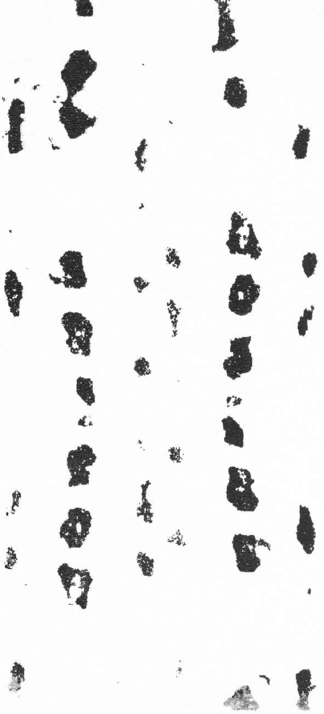

オオゾウムシ
ゾウムシ上科 オサゾウムシ科
学名：Sipalinus gigas Fabricius
体長：12mm-24mm
生息地：北海道、本州、四国、九州、朝鮮、中国、
台湾、フィリピン、ボルネオ、ジャバ、
パプアニューギニア、マライ、インド
東京観測地：皇居、大田区、多摩川中流域、
青梅市、奥多摩、檜原村、奥多摩日原、町田
生息環境：マツやスギなどの針葉樹の枯れ木
.
Curculion superfamily Osa weevilidae
Scientific name: Sipalinus gigas Fabricius
Habitat: Hokkaido, Honshu, Shikoku, Kyushu,
Korea, China, Taiwan, Philippines, Borneo, Java,
Papua New Guinea, Malai, India
Tokyo Observation Sites: Imperial Palace, Ota Ward,
Middle Tama River Basin, Ome City, Okutama,
Hinohara Village, Okutama Hihara, Machida
Tokyo Observation Site: Meiji Jingu Shrine
Habitat: Dead trees of conifers such as pine and cedar